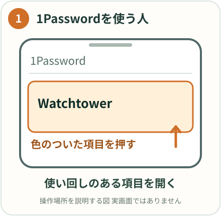
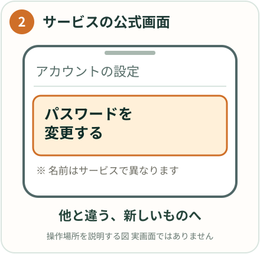
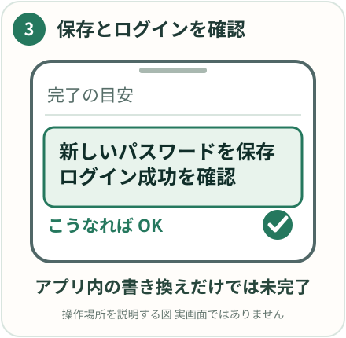

Q1Passwordを入れたけど、パスワードは今までの使い回しのままでも大丈夫？
やってみよう
「これが全然ダメ」。管理ソフトは鍵を入れる金庫で、家の鍵も車の鍵も倉庫の鍵も全部同じ1本のままなら、金庫を買っても強くならない。まず鍵を全部別々のパスワードに変えてから金庫に入れる。1Passwordを入れたからといって変更しなくていい、は勘違い。
学長ライブ：10/24 87:35 / 10/17 118:12 / 10/10 50:59
やってみよう 使い回しを1つずつ直す（1Passwordを使っている人）
1Password›Watchtower（ウォッチタワー）›使い回されたパスワード



- Watchtowerで「使い回されたパスワード」の一覧を開きます。
- 銀行・証券・Google・Appleなど、取られたら困るものから1つ選びます。
- そのサービスの公式アプリかブックマークから入り、パスワードを変更します。1Passwordが新しいパスワードを作ってくれます。
- 1Passwordに保存して、新しいパスワードでログインできるか確かめます。
できたらWatchtowerの「使い回し」の数が1つ減ります。1日1つで大丈夫です。
ChatGPTにはこう聞く（画面のスクショを一緒に送ると早いです）
1Passwordのウォッチタワーで「使い回されたパスワード」に（サービス名）が出ています。（サービス名）のパスワードを変える画面はどこですか？iPhoneでの手順を、押す場所の名前つきで短く教えてください。